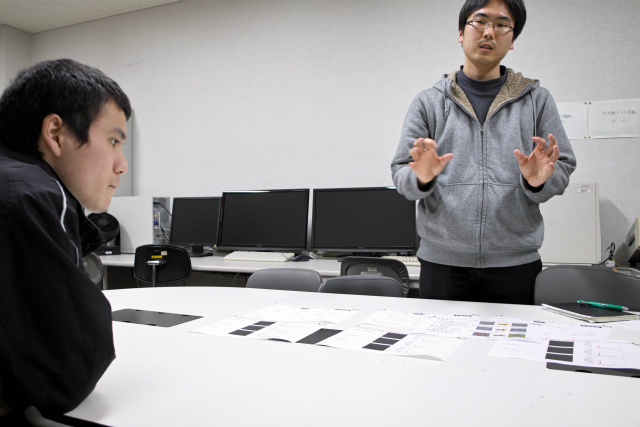

| ・ 結果の海 (H30.01.23) | |||
来月9日提出で，修論が山場なこのごろ．M2Y岡くんは修士なのでデータの海は先月には自力で抜けています．しかし，細々した各論はたくさん出ても修論の結論に至る最後の1手がなかなかというところ．結果をまとめたプレゼンシートを並べて，Fの部屋にてホログラフィ勢で結果の海を泳いでみました． |
|||
|
各論はいっぱいあるんだけど |

まずはそれぞれプレゼン | ||
|
助教の人が「ハイ，論破」でゆさぶる |
補助線的な結果があればいけそう | ||
|
いろいろアイデアだし |
取捨選択中 | ||
|
いま好きなこと言えば検証して貰える |
いろいろ書き込んでいって | ||
|
各論を繋げる一手になりそう |
M2Hくん登場 | ||
|
上着をぬげば |
本気モード | ||
|
議論が盛り上がります |
うまく結論出せそう（フラグ？ | ||